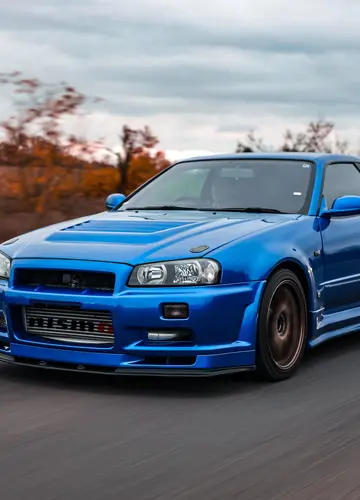

Born from the streets of Japan and forged into legend, the Nissan Skyline R34 GT-R stands as more than a machine it is an icon of an era. With its unmistakable silhouette, legendary RB26DETT heart, and relentless performance, the R34 commands attention without asking for it. Every line, every rev, and every shift carries the spirit of Japanese engineering at its finest—a timeless symbol of speed, precision, and rebellion that continues to echo through automotive history.
Japanese GT Championship
The Nissan Skyline R34 GT-R won the highly competitive japanese GT
championship multiple times, notably dominating the 1999 and 2003
seasons
Super Taikyu Endurance
The super Taikyu Endurance series was japan's premier endurance
series. The skyline R34 GT-R displayed mastery in the challenge,
successfully capturing numerous victories and championship
The Nurburgring 24 Hours
The Skyline R34 GT-R achieved a legendary class victory at the
grueling 24 Hours of Nurburgring endurance race, demonstrating
excellent reliability under extreme pressure
Nismo and Le Mans
In the 1998 24 Hours of Le Mans, Nissan’s reputation was boosted when
all 4 works cars made the top ten - taking 3rd, 5th, 6th and 10th
places overall dominating the competition on Circuit de la Sarthe.